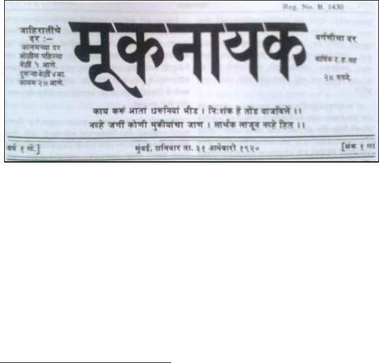

123
knowledge. This is a correct logic but it should not be forgotten that it
reduces the importance of those who are fighting against the practice of
untouchability. The real humanity lies in breaking the barriers.
Here, Babasaheb was making a call for sharing Dalit experiences,
suggesting remedies against the injustice done to Dalits and to discuss
the ways and means for our progress in future.
Mook Nayak Header
The attempt here has been to engage with the so-called ‘privilege’ of not
looking like a ‘Dalit,’ debate it, understand it, gain insights from it and
act more sensitively. As I talked to more people from my community
and outside of it, I found it even more important to write this piece.
People outside the community were unaware about the nuances of
experience and the people from community were not open to discuss it
– possibly being very cautious, afraid of the world becoming even more
unfair to them. Or, they want to stay in their place, enjoying the little
‘distinctions’ that might have been bestowed upon them.
From the pages of Mook Nayak, published 14 April 2015, Round Table India Taken
from the first editorial written by Babasaheb originally written in Marathi for
the very first issue of Mook Nayak published in January 1920. This translation
was first published in July 2010 by Dr Babasaheb Ambedkar Research Institute
in Social Growth, Kolhapur. Translated by Dr B R Kamble.